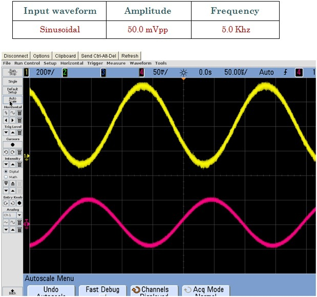

Voltage Gain: Due to the circuit configuration (AC equivalent shown in Figure 14), the voltage gain of EF amplifier is given as:
If the bypass capacitor is removed then RE will not be shorted out of the AC equivalent circuit. This results in the voltage gain to change as:
Input Resistance: One of the advantages of EF circuit is that it provides high input resistance. In the case of EF amplifier the RE is never bypassed as the output is taken across:
Re = RE || RL
Therefore the AC input resistance to the base of the amplifier is given as:
Rin(base) ≈ βac ( r’e + RE )
If Re >> r’e, then the input resisitance at the base is simplified to:
Rin(base) ≈ βac RE
As R1, R2 and Rin(base) all appear in parallel therefore the total input resistance is given by:
Rin(base) = R1 | R2 | Rin(base)
Output Resistance: The output resistance of the EF amplifier is given as:
Fig.1 Shows Input signal (Red wave form) and Output (Yellow Waveform)
Fig.2 Shows Input signal (Red wave form) and Output (Yellow Waveform)

Fig.3 Shows Input signal (Red wave form) and Output (Yellow Waveform)